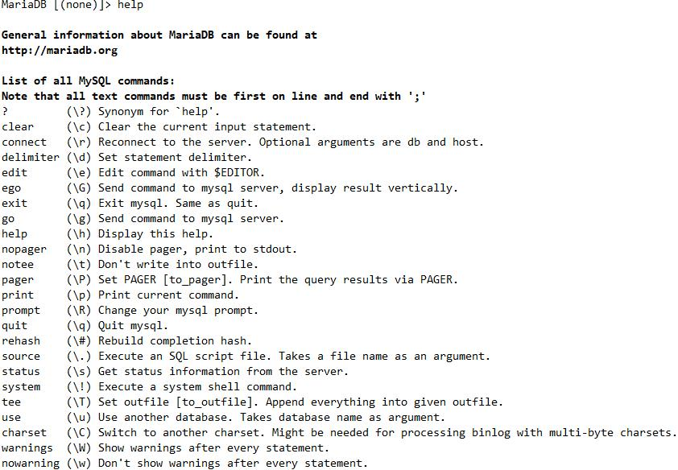
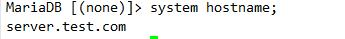
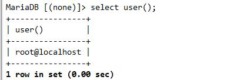
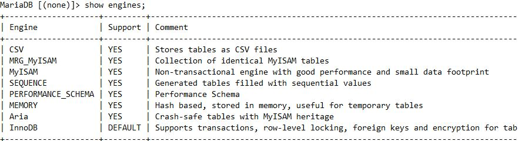

mysql管理
1.MySQL是用RPM包安装的
启动服务
systemctl start mariadb
如果在启动状态， 需要重启服务， 可以用以下命令直接重启 ， 而不需要先关闭再启动
关闭服务
systemctl stop mariadb
重启服务
systemctl restart mariadb
2.不是rpm安装的,启动和关闭 MySQL 服务
启动服务
/usr/bin/mysqld_safe &
直接运行mysqld程序来启动MySQL服务的方法很少见，mysqld_safe脚本会在启动MySQL服务器后继续监控其运行情况，并在其死机时重新启动它。
关闭服务
mysqladmin -uroot shutdown -p密码
mysql命令
mysql [option] [database]
[option]
-u：指定需要登录的用户
-h：指定需要登录的主机
-p：指定该登录用户的密码
-e：在不登陆服务器端时，执行操作并退出
示例：
-u与root用户名之间的空格可省略，表示将会提示输入密码
mysql -uroot -p
mysql -u root -p123123
使用-D指定数据库
mysql -u root -D test -p123123
mysql -u root test -p123123
通过-S指定套接字位置
mysql -u root -p [-S /var/lib/mysql/mysql.sock]
或者将socket文件路径写入配置文件/etc/my.cnf.d/client.cnf
[client]
socket=/data/mysql/mysql.sock
使用-h指定mysql主机，-P大写，指定mysql服务对应的端口，前提是已授权客户端的IP能连数据库
mysql -u root -p -h 192.168.1.103 -P 3306
执行-e选项后面跟随的sql语句
mysql -u root -p123123 -e 'use mysql; select * from use;'
连接数据库的常用选项
--host=host_name, -h host_name：服务端地址；
--user=user_name, -u user_name：用户名；
--port=port_num, -P port_num：服务端端口；
--socket=path, -S path
--database=db_name, -D db_name：
--compress, -C：数据压缩传输
--execute=statement, -e statement：非交互模式执行SQL语句；
--vertical, -E：查询结果纵向显示；
--protocol={TCP|SOCKET|PIPE|MEMORY}：
mysqladmin [option] command
[option]
-u：指定需要登录的用户
-p：指定该登录用户的密码
-h：指定需要登录的主机
command
create [DB_NAME]
drop [DB_NAME]
debug 打开调试日志并记录于error log中
status 输出服务器的基本状态信息
--sleep：status的子参数，多久刷新一次
--count：status的子参数，显示的批次
extended-status 显示扩展的状态信息，等于：SHOW GLOBAL STATUS;
flush-hosts 清空主机相关的缓存，包括：DNS解析缓存、连接错误次数过多而被拒绝访问mysqld的主机等
flush-logs 关闭日志，打开新日志对二进制、中继日志进行滚动
flush-privileges 刷新配置
flush-status 重置状态变量
flush-tables 关闭当前打开的表文件句柄
flush-threads 清空线程缓存池
kill 杀死指定的线程
password 修改指定用户的密码
ping 探测服务器是否在线
processlist 显示mysql线程列表
reload 相当于flush-privileges
refresh 相当于同时使用flush-logs和flush-hosts
shutdown 关闭mysql服务
start-slave 启动从服务器线程
stop-slave 关闭从服务器线程
variables 输出mysqld的服务器变量
version 显示mysql服务器版本
数据库导出、导入
导出mariadb数据库有多种解决方案，一般采用phpmyadmin或Navicat for MySQL等
分别是；-u用户、-p密码、数据库名、> 导出路径。以.sql结尾。
/usr/local/mysql/bin/mysqldump -uroot -p renwole > /home/renwole.sql
注意：如果只导出表结构，在-p后面加上-d即可。
导入数据库有2种解决方案。
方案一
MariaDB [(none)]> create database renwole; //建立空数据库名
MariaDB [(none)]> use renwole; //选择数据库
MariaDB [(none)]> set names utf8; //设置数据库导入编码
MariaDB [(none)]> source /home/renwole.sql; //导入数据（注意sql文件的路径）
方案二
mysql -uroot -p renwole < /home/renwole.sql
建议使用第二种方案导入，简单快捷不用设置导入编码，不易出错。以上解决方案也适用于mysql&mariadb任意版
MySQL CLI管理
help帮助

system：在CLI接口下执行shell命令

显示当前数据库已存在的用户

查看系统里已经存在的数据库
1 | MariaDB [(none)]> show databases; |
查看字符集排序规则
1 | MariaDB [(none)]> show collation; |
查看字符集
1 | MariaDB [(none)]> show character set; |
查看引擎

导入数据库
查看已创建表的语句
SHOW CREATE TABLE student;
修改提示符：
prompt临时修改，
永久修改则修改/etc/my.cnf添加[mysql]字段下 例：prompt=[\u@\d]-->
1 | MariaDB [(none)]> prompt |
查看当前使用的是哪个数据库
select database();